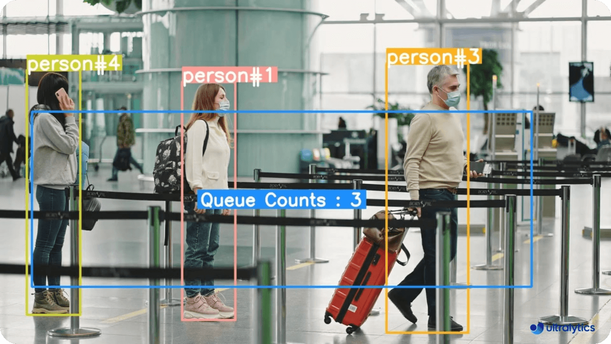
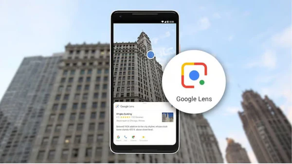

Приложения в реалния свят
Разпознаването на образи има много приложения в различни индустрии и сфери на живота. Технологията е широко използвана в медицината, автомобилостроенето, безопасността и мобилните приложения.
МедицинаВ медицината, разпознаването на образи е ключово за диагностика и лечение. Алгоритми, които анализират медицински изображения като рентгенови снимки, ядрено-магнитен резонанс (ЯМР) и компютърна томография (CT), могат да помогнат на лекарите да откриват заболявания на ранен етап. В някои случаи изкуственият интелект показва дори по-голяма точност от човешките лекари. Както показва изследването на Esteva и колеги:
"We show that deep learning models can be trained to classify skin cancer with the accuracy comparable to dermatologists." (Esteva, A., et al., 2017)
Превод на цитата: „Показваме, че моделите на дълбоко обучение могат да бъдат обучени да класифицират рак на кожата с точност, сравнима с тази на дерматолозите.“ (Esteva, A., et al., 2017)
 Автомобили
Автомобили
Самоуправляващите се автомобили използват технологии за разпознаване на образи, за да идентифицират пътни знаци, пешеходци, велосипедисти и други превозни средства. Това е основа за вземане на решения за спиране, завиване или избягване на препятствия. Технологията позволява на колите да навигират в сложни условия на пътя. Както обяснява Tesla за системата си:
"Tesla Autopilot uses cameras and sensors to detect the environment around the vehicle and make driving decisions." [4] (Tesla Autopilot, 2021)
Превод на цитата: „Tesla Autopilot използва камери и сензори, за да открива околната среда около превозното средство и да взема решения за шофиране.“ (Tesla Autopilot, 2021)
 Безопасността
Безопасността
Разпознаването на образи играе роля и в безопасността. Много летища, банки и обществени места използват лицево разпознаване за проверка на самоличности или наблюдение. Това помага за предотвратяване на престъпления.
 Мобилни и интернет приложенияПопулярни приложения като Google Lens и Shazam използват разпознаване на образи – първото за търсене по снимка, второто за разпознаване на музика. Приложенията за разпознаване на растения, животни и дори архитектура също стават все по-достъпни за обикновения потребител.
